C++ 漫谈哈夫曼树
1. 前言
什么是哈夫曼树？
把权值不同的n个结点构造成一棵二叉树，如果此树满足以下几个条件：
- 此
n个结点为二叉树的叶结点。 权值较大的结点离根结点较近，权值较小的结点离根结点较远。- 该树的
带权路径长度是所有可能构建的二叉树中最小的。
则称符合上述条件的二叉树为最优二叉树，也称为哈夫曼树(Huffman Tree)。
构建哈夫曼树的目的是什么？
用来解决在通信系统中如何使用最少的二进制位编码字符信息。
本文将和大家聊聊哈夫曼树的设计思想以及构建过程。
2. 设计思路
哈夫曼树产生的背景：
在通信系统中传递一串字符串文本时，对这一串字符串文本进行二进制编码时，如何保证所用到的bit位是最少的，或保证整个编码后的传输长度最短。
现假设字符串由ABCD 4个字符组成，最直接的思维是使用 2 个bit位进行等长编码，如下表格所示：
| 字符 | 编码 |
|---|---|
A |
00 |
B |
01 |
C |
10 |
D |
11 |
传输ABCD字符串一次时，所需bit为 2位，当通信次数达到 n次时，则需要的总传输长度为 n*2。当字符串的传输次数为 1000次时，所需要传输的总长度为 2000个bit。
使用等长编码时，如果传输的报文中有 26 个不同字符时，因为需要对每一个字符进行编码，至少需要 5位bit。
但在实际应用中，各个字符的出现频率或使用次数是不相同的，如A、B、C的使用频率远远高于X、Y、Z。使用等长编码特点是无论字符出现的频率差异有多大，每一个字符都得使用相同的bit位。
哈夫曼的设计思想是：对字符串信息进行编码设计时，让使用频率高的字符使用短码，使用频率低的用长码，以优化整个信息编码的长度。基于这种简单、朴素的想法设计出来的编码也称为不等长编码。
哈夫曼不等长编码的具体思路如下：
如现在要发送仅由A、B、C、D 4 个字符组成的报文信息 ，A字符在信息中占比为 50%，B的占比是 20%，C的占比是 15%， D的 占比是10%。
不等长编码的朴实思想是字符的占比越大，所用的bit位就少，占比越小，所用bit位越多。如下为每一个字符使用的bit位数：
A使用1位bit编码。B使用2位bit编码。C使用3位bit编码。D使用3位bit编码。
具体编码如下表格所示：
| 字符 | 占比 | 编码 |
|---|---|---|
A |
0.5 |
0 |
B |
0.2 |
10 |
C |
0.15 |
110 |
D |
0.1 |
111 |
如此编码后，是否真的比前面的等长编码所使用的总bit位要少？
计算公式=0.5*1+0.2*2+0.15*3+0.1*3=1.65。
先计算每一个字符在报文信息中的占比乘以字符所使用的
bit位。然后对上述每一个字符计算后的结果进行相加。
显然，编码ABCD只需要 1.65 个bit ，比等长编码用到的2 个 bit位要少 。当传输信息量为 1000时，总共所需要的bit位=1.65*1000=1650 bit。
为什么称哈夫曼编码为哈夫曼树?
因为字符的编码是通过构建一棵自下向上的二叉树推导出来的，如下图所示：
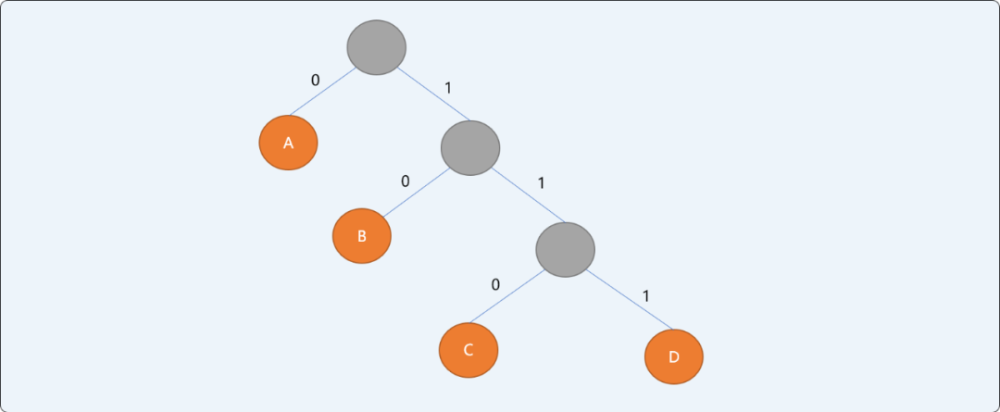
哈夫曼树的特点：
- 信息结点都是叶子结点。
- 叶子结点具有权值。如上二叉树，
A结点权值为0.5，B结点权值为0.2，C结点权值为0.15，D结点权值为0.1。 - 哈夫曼编码为不等长前缀编码（即要求一个字符的编码不能是另一个字符编码的前缀）。
- 从
根结点开始，为左右分支分别编号0和1，然后顺序连接从根结点到叶结点所有分支上的编号得到字符的编码。
相信大家对哈夫曼树有了一个大概了解，至于如何通过构建哈夫曼树，咱们继续再聊。
3. 构建思路
在构建哈夫曼树之前，先了解几个相关概念：
- 路径和路径长度：在一棵树中，从一个结点往下可以达到的孩子或孙子结点之间的通路，称为
路径。通路中分支的数目称为路径长度。若规定根结点的层数为1，则从根结点到第L层结点的路径长度为L-1。 - 结点的权及带权路径长度：若将树中结点赋给一个有着某种含义的数值，则这个数值称为该结点的
权。结点的带权路径长度为：从根结点到该结点之间的路径长度与该结点的权的乘积。 - 树的带权路径长度：树的带权路径长度规定为所有叶子结点的带权路径长度之和，记为
WPL。
如有权值为{3,4,9,15}的 4 个结点，则可构造出不同的二叉树，其带权路径长度也会不同。如下 3 种二叉树中，B的树带权路径长度是最小的。
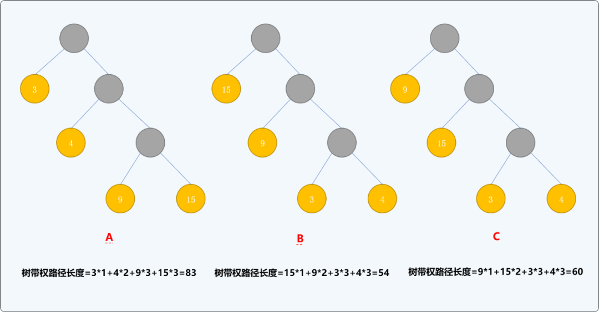
哈夫曼树的构建过程就是要保证树的带权路径长度最小。
那么，如何构建二叉树，才能保证构建出来的二叉树的带权路径长度最小？
如有一字符串信息由 ABCDEFGH 8个字符组成，每一个字符的权值分别为{3,6,12,9,4,8,21,22}，构建最优哈夫曼树的流程：
- 以每一个结点为根结点构建一个单根二叉树，二叉树的左右子结点为空，根结点的权值为每个结点的权值。并存储到一个树集合中。
- 从
树集合中选择根结点的权值最小的2个树。重新构建一棵新二叉树，让刚选择出来的2棵树的根结点成为这棵新树的左右子结点，新树的根结点的权值为2个左右子结点权值的和。构建完成后从树集合中删除原来2个结点，并把新二叉树放入树集合中。
如下图所示。权值为 3和4的结点为新二叉树的左右子结点，新树根结点的权值为7。
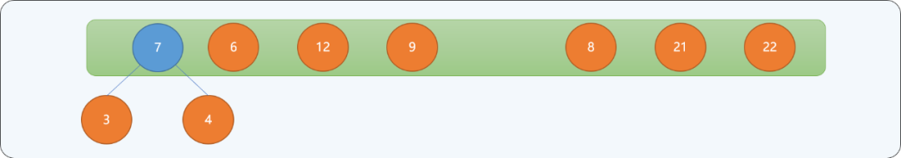
- 重复第二步，直到树集合中只有一个根结点为止。
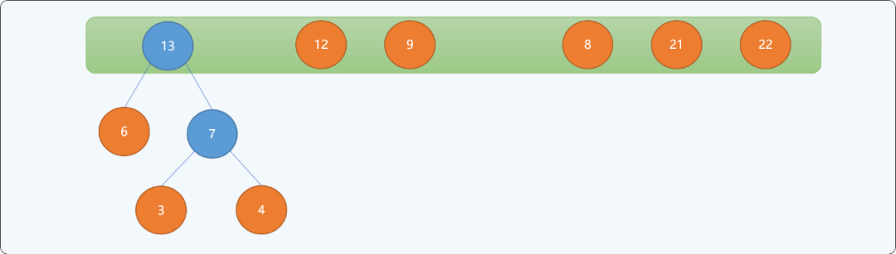
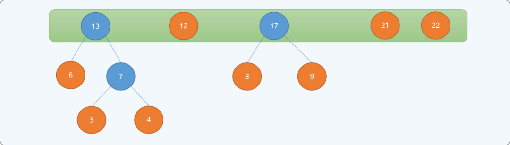
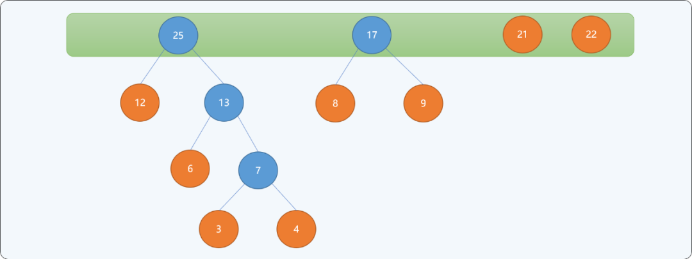
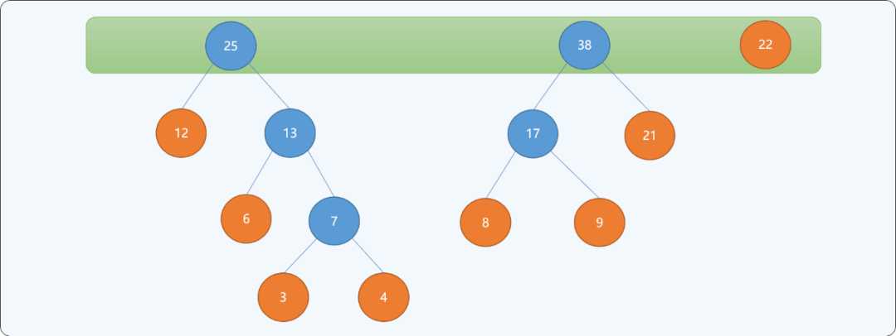
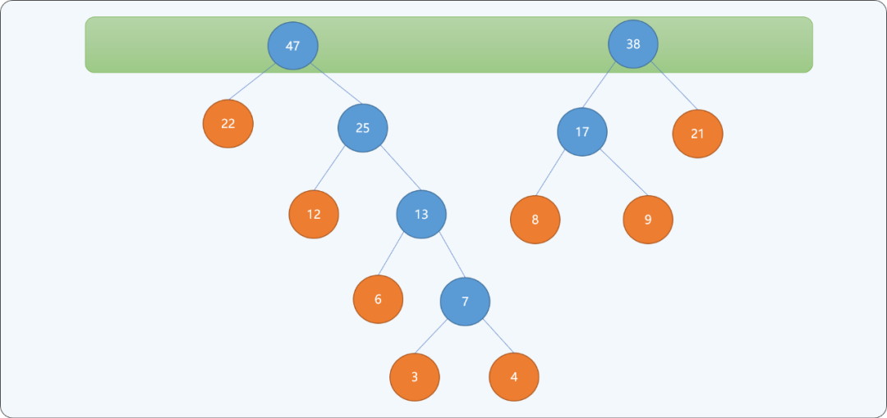
当最后集合中只存在一个根结点时，停止构建，并且为最后生成树的每一个非叶子结点的左结点分支标注0，右结点分支标注1。如下图所示：
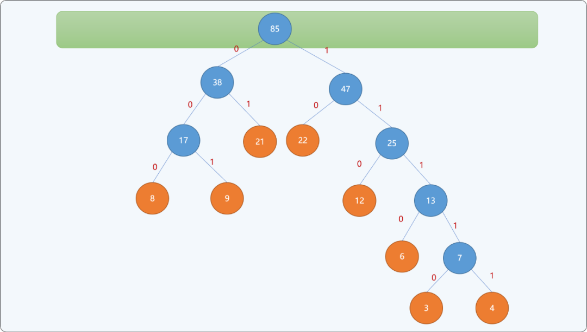
通过上述从下向上的思想构建出来的二叉树，可以保证权值较小的结点离根结点较远，权值较大的结点离根结点较近。最终二叉树的带权路径长度：WPL=(3+4)*5+6*4+(8+9+12)*3+(21+22)*2=232 。并且此树的带权路径长度是所有可能构建出来的二叉树中最小的。
上述的构建思想即为哈夫曼树设计思想，不同权值的字符编码就是结点路径上0和1的顺序组合。如下表所述，权值越大，其编码越小，权值越小，其编码越大。其编码长度即从根结点到此叶结点的路径长度。
| 字符 | 权值 | 编码 |
|---|---|---|
A |
3 |
11110 |
B |
6 |
1110 |
C |
12 |
110 |
D |
9 |
001 |
E |
4 |
11111 |
F |
8 |
000 |
G |
21 |
01 |
H |
22 |
10 |
4. 编码实现
4.1 使用优先队列
可以把权值不同的结点分别存储在优先队列（Priority Queue）中，并且给与权重较低的结点较高的优先级（Priority）。
具体实现哈夫曼树算法如下：
- 把
n个结点存储到优先队列中，则n个节点都有一个优先权Pi。这里是权值越小，优先权越高。 -
如果队列内的节点数>1，则：
-
从队列中移除两个最小的结点。
- 产生一个新节点，此节点为队列中移除节点的父节点，且此节点的权重值为两节点之权值之和，把新结点加入队列中。
- 重复上述过程，最后留在优先队列里的结点为哈夫曼树的根节点（
root）。
完整代码：
#include <iostream>
#include <queue>
#include <vector>
using namespace std;
//树结点
struct TreeNode {
//结点权值
float weight;
//左结点
TreeNode *lelfChild;
//右结点
TreeNode *rightChild;
//初始化
TreeNode(float w) {
weight=w;
lelfChild=NULL;
rightChild=NULL;
}
};
//为优先队列提供比较函数
struct comp {
bool operator() (TreeNode * a, TreeNode * b) {
//由大到小排列
return a->weight > b->weight;
}
};
//哈夫曼树类
class HfmTree {
private:
//优先队列容器
priority_queue<TreeNode *,vector<TreeNode *>,comp> hfmQueue;
public:
//构造函数，构建单根结点树
HfmTree(int weights[8]) {
for(int i=0; i<8; i++) {
//创建不同权值的单根树
TreeNode *tn=new TreeNode(weights[i]);
hfmQueue.push(tn);
}
}
//显示队列中的最一个结点
TreeNode* showHfmRoot() {
TreeNode *tn;
while(!hfmQueue.empty()) {
tn= hfmQueue.top();
hfmQueue.pop();
}
return tn;
}
//构建哈夫曼树
void create() {
//重复直到队列中只有一个结点
while(hfmQueue.size()!=1) {
//从优先队列中找到权值最小的 2 个单根树
TreeNode *minFirst=hfmQueue.top();
hfmQueue.pop();
TreeNode *minSecond=hfmQueue.top();
hfmQueue.pop();
//创建新的二叉树
TreeNode *newRoot=new TreeNode(minFirst->weight+minSecond->weight);
newRoot->lelfChild=minFirst;
newRoot->rightChild=minSecond;
//新二叉树放入队列中
hfmQueue.push(newRoot);
}
}
//按前序遍历哈夫曼树的所有结点
void showHfmTree(TreeNode *root) {
if(root!=NULL) {
cout<<root->weight<<endl;
showHfmTree(root->lelfChild);
showHfmTree(root->rightChild);
}
}
//析构函数
~HfmTree() {
//省略
}
};
//测试
int main(int argc, char** argv) {
//不同权值的结点
int weights[8]= {3,6,12,9,4,8,21,22};
//调用构造函数
HfmTree hfmTree(weights);
//创建哈夫曼树
hfmTree.create();
//前序方式显示哈夫曼树
TreeNode *root= hfmTree.showHfmRoot();
hfmTree.showHfmTree(root);
return 0;
}
显示结果：
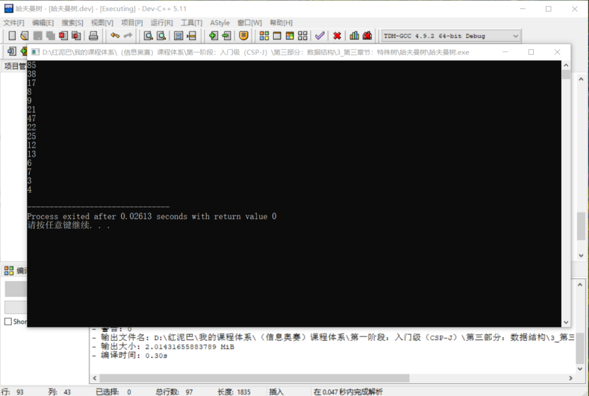
上述输出结果，和前文的演示结果是一样的。
此算法的时间复杂度为O（nlogn）。因为有n个结点，所以树总共有2n-1个节点，使用优先队列每个循环O（log n）。
4.2 使用一维数组
除了上文的使用优先队列之外，还可以使用一维数组的存储方式实现。
在哈夫曼树中，叶子结点有 n个，非叶子结点有 n-1个，使用数组保存哈夫曼树上所的结点需要 2n-1个存储空间 。其算法思路和前文使用队列的思路差不多。直接上代码：
#include <iostream>
using namespace std;
//叶结点数量
const unsigned int n=8;
//一维数组长度
const unsigned int m= 2*n -1;
//树结点
struct TreeNode {
//权值
float weight;
//父结点
int parent;
//左结点
int leftChild;
//右结点
int rightChild;
};
class HuffmanTree {
public:
//创建一维数组
TreeNode hfmNodes[m+1];
public:
//构造函数
HuffmanTree(int weights[8]);
~HuffmanTree( ) {
}
void findMinNode(int k, int &s1, int &s2);
void showInfo() {
for(int i=0; i<m; i++) {
cout<<hfmNodes[i].weight<<endl;
}
}
};
HuffmanTree::HuffmanTree(int weights[8]) {
//前2 个权值最小的结点
int firstMin;
int secondMin;
//初始化数组中的结点
for(int i = 1; i <= m; i++) {
hfmNodes[i].weight = 0;
hfmNodes[i].parent = -1;
hfmNodes[i].leftChild = -1;
hfmNodes[i].rightChild = -1;
}
//前 n 个是叶结点
for(int i = 1; i <= n; i++)
hfmNodes[i].weight=weights[i-1];
for(int i = n + 1; i <=m; i++) {
this->findMinNode(i-1, firstMin, secondMin);
hfmNodes[firstMin].parent = i;
hfmNodes[secondMin].parent = i;
hfmNodes[i].leftChild = firstMin;
hfmNodes[i].rightChild = secondMin;
hfmNodes[i].weight = hfmNodes[firstMin].weight + hfmNodes[secondMin].weight;
}
}
void HuffmanTree::findMinNode(int k, int & firstMin, int & secondMin) {
hfmNodes[0].weight = 32767;
firstMin=secondMin=0;
for(int i=1; i<=k; i++) {
if(hfmNodes[i].weight!=0 && hfmNodes[i].parent==-1) {
if(hfmNodes[i].weight < hfmNodes[firstMin].weight) {
//如果有比第一小还要小的，则原来的第一小变成第二小
secondMin = firstMin;
//新的第一小
firstMin = i;
} else if(hfmNodes[i].weight < hfmNodes[secondMin].weight)
//如果比仅比第二小小
secondMin = i;
}
}
}
int main() {
int weights[8]= {3,6,12,9,4,8,21,22};
HuffmanTree huffmanTree(weights);
huffmanTree.showInfo();
return 1;
}
测试结果：
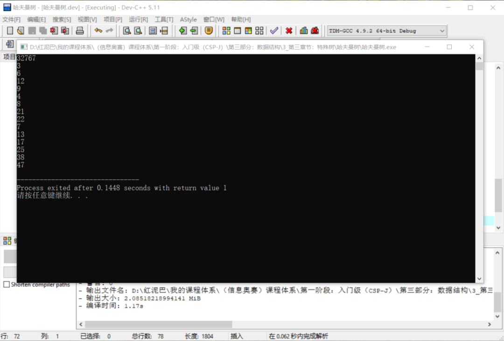
5. 总结
哈夫曼树是二叉树的应用之一，掌握哈夫曼树的建立和编码方法对解决实际问题有很大帮助。